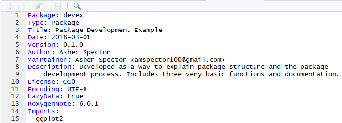
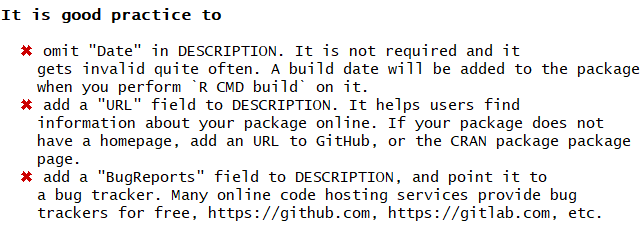

2 Package Development
To do: 1. Make motivation shorter, possibly move README section out 2. Add in motivation for testing.
As a quick reminder, you can find the ‘devex’ example package linked here, on GitHub, if you’d like to look through it while reading the guide.
2.1 Motivation
2.1.1 A Bad Example
Imagine Grace has built an architecture for aggregating polling data, and you would like to use it in your own research project. So you go to GitHub and you download Grace’s repository, hoping to build on her research. One of the scripts you download looks like this.

This is not what packages should look like
When you read this script, you should notice at least a couple of problems.
First, upon reading this code, most programmers would have absolutely no idea what it’s supposed to do. Because this is a simple example, you might be able to guess that the lm function returns the squared difference of its inputs, and the sqt function takes the square root of negative numbers. But the “scalep” function is almost totally incomprehensible - what’s it supposed to do?
Second, even if you could tell what the “scalep” function does, you’d have no idea how to use it, because you don’t know how the “d” input should be structured.
Third, it’s very difficult to use this script in combination with other packages. The “lm” function has the same name as the “lm” function from the R Stats package, which is incredibly useful, and very commonly used. Giving a new function the same name as a base or commonly used function will create extremely weird bugs or just cause a fatal error and end your entire session.
Lastly, and less obviously, you don’t know what version of Grace’s package this script is. Grace will probably update and modify her scripts over time, and unless you are aware of the contents of those changes, the script may behave differently than you expect.
Yet never fear - packages don’t need to be this way! Most packages are extremely well-built and easy to use. In this section, we’ll demonstrate how to make sure your packages are like those packages.
2.1.2 Solutions
In this section, we’ll discuss the solutions to the problems outlined above. For each problem, we’ll discuss the conceptual solution, and then we’ll describe how the structure of R Packages allows users to integrate those solutions. Note that this section mostly just outlines package structure - we won’t talk about actually creating things like documentation until the next couple sections.
2.1.2.1 Code Style
The first solution is to write code differently. The script above has a couple problems with style. Specifically, note the difference between the following two code samples:
sqt <- function(x){
if(x==0){return(x)}
else if(x>0){return(sqrt(x))}
else if(x<0){return(complex(real = 0, imaginary = sqrt(-x)))}
}# This function takes the complex square root of real numbers
general_sqrt <- function (x) {
# Return the normal square root if x > 0
if (x > 0 || x == 0) {
return(sqrt(x))
}
# Else return the complex square root
else {
return(complex(real = 0, imaginary = sqrt(-x)))
}
}Clearly, the second example is a lot more readable and a lot easier to understand. Later, we’ll talk about specific coding guidelines, but for now, just remember that the goal of programming style guides is to make your code readable and therefore useable. This will also make it a lot easier for others to fix and find bugs in your packaged code.
2.1.2.2 Documentation
Of course, nobody wants to read through packaged code in order to guess what a function does. Instead, packages also include documentation to tell users how to use different functions and objects developed in the package. For exampe, imagine you typed ‘?scalep’ into the Console and got the following result:

Documentation for scalep function
This documentation tells you what the scalep function does, what kinds of inputs it needs, what kind of output it returns, and gives you examples of how to use it. Documentation makes packages usable, and is suprisingly easy to write using devtools and roxygen2, so it’s a critical part of any package.
2.1.2.3 Description
The DESCRIPTION file of an R Package helps solve each one of the first three problems. It briefly outlines the purpose of the package, as well as the version of the pacakge and who maintains it. Perhaps most importantly for newer users, it also documents the dependencies of your package. For example, if you wrote a package which relies heavily on the boot package version 1.3-20, your description will document that, so your users don’t have to spend hours searching for the exact package necessary to make your package work.
2.1.2.4 Namespace
The namespace is a bit more complicated than the other parts of the package structure. The purpose of the namespace is make sure your package works in combination with other packages. For example, if your package includes some data labelled ‘lm’, a good namespace will ensure that using that data in conjunction with the R stats package (which has a function called ‘lm’) will not throw an error. How exactly the namespace does this is a bit complicated and beyond the scope of this guide, so if you’re dying for more specifics, you should read through this wonderful page. Thankfully, Roxygen2 will automatically generate a namespace for you - we’ll discuss how to do this a little later.
Remember: the namespace will help your package play nice with others in the event of name conflicts, but it’s still better to name your functions so that the they don’t overlap with names of other commonly used functions if possible.
Now that we’ve gone through the overall structure of packages, we’ll walk you through what Grace should have done - the process of building an R package from start to finish.
2.1.2.5 The README
The README file is a bit different than the others, because your package will actually work fine even if you don’t have one. However, if you want other people to ever use your package, it’s best to have a README. The purpose of a README is basically to bridge the gap between the DESCRIPTION and the actual documentation in your package. In other words, someone using your package might know what it does in a general sense from your DESCRIPTION, but they won’t necessarily know exactly how to set up the package or how to use specific functions. The README takes care of that. In general, READMEs should do at least two things, with a couple of optional ones:
(Important):
- Offer a longer (one to three paragraph) description of the package
- Help users install and set up the package
(Optional from here on):
- Tell developers what to do if they want to contribute to your package
- Help contributers figure out how to run the packages’ unit tests (we’ll talk more about unit tests in the next section)
- Offer some acknowledgements
This template linked here is pretty good. Again, because your package will technicaly function without your README, the actual structure and content of a README can be flexible. However, just remember that if you don’t have a README which outlines why and how to use your package, other developers are unlikely to want to use it.
2.2 Downloading Development Tools
Before we get started, you’ll want to download three packages that are extremely useful for package development. If you are running Windows, you can do so by following the instructions below:
Go to https://cran.rstudio.com/ and select “Download R for Windows.”
Click “RTools” and download the latest version of the tools (or the tools that are compatible with your version of R).
Let the installer run itself (the defaults are fine).
For Mac/Linux users, head to the R Gui (or your favorite IDE) and run the following code to download the two primary development packages you’ll need:
If you are prompted to choose a CRAN mirror for your session, simply pick the mirror closest to your location.
2.3 Initializing the Package Structure
Now we can begin to walk through the process of creating an R package. The first thing you’ll always want to do is run the following function:
Note that the path specified by devtools::create must currently be empty, otherwise it devtools will throw an error. Successfully running this function will create a couple of important files which constitute a skeletal outline of the package. In particular, it will create:
- A ‘packagename.Rproj’ file in the root of your specified directory. This file lets R know that a package resides in the directory of interest.
- A ‘R’ subdirectory in the root of your specified directory, which is where all of core the R code of your package will live.
- A DESCRIPTION file, which will come with a couple of preset fields.
- A NAMESPACE file, which we’ve already discussed the importance of.
Once you’ve set up the basic structure of your package, you can start modifying files and writing it in earnest!
2.4 Modifying the DESCRIPTION File
The DESCRIPTION file gives an extremely brief overview to the package. It includes critical information such as the author of the package, the title, a very short summary of its purpose, and the liscensing information. Open the “DESCRIPTION” file using your favorite text editor in order to inspect and edit its contents.
DESCRIPTION is a DCF file. This file format may be unfamiliar to you, but it’s quite simple. Each line contains a a fieldname and value, separated by a colon. Sometimes, values are long enough to require multiple lines, in which case they are indented by four spaces. For example, the DESCRIPTION file for the devex package might look something like this:

Let’s go through the fields and discuss what they mean. The first seven fields listed are mandatory, meaning that if you do not include them, the development environment will throw an error later on when you’re trying to build your package.
- Package: This is the name of the package. It should match the package name you chose earlier, and you should probably just leave this as is.
- Title: A short but more descriptive title of your package than its name.
- Version: The version of your package. Since you’re creating this package for the first time, presumably it’s version 0.1.0.
- Author: Here, you should add in your name.
- Maintainer: Here, you should add in your name as well as a valid email enclosed in <> brackets. Note that if you do not enter a valid email, the development environment may throw errors later.
- Description: This should be a one-paragraph comprehensive description of the package. It is necessarily a high level-description, but it should be a complete one.
- License: You should add in a License, which describes how others can legally use the package. Most of the time (especially in the US), you should write ‘CC0’ in the License field, which implies that the package is open for all use, and you have relinquished all your rights to it. For more information on various licensing options, click this link.
(Note all of the fields from this point on are optional, but encouraged!)
- Type: This describes what type of project you’re creating - in this case, because you’re creating a package, you should write “Package.”
- Date: The date, in YYYY-MM-DD fashion.
- LazyData: Write “true” after LazyData and the colon. Writing ‘true’ ensures that if you include any data with your package (which you frequently will), when another user loads your package, they won’t automatically load up the data, but will only load it if it becomes necessary during their use. This option reduces the amount of RAM users have to expend when loading packages, especially if you are planning to include a lot of data with your package.
- Encoding: Just leave this as “UTF-8”; discussing what encodings are isn’t super important for this guide. If you’re dying to learn about encodings, visit this webpage.
- RoxygenNote: Roxygen will automatically fill in the version of Roxygen2 used to build the package in this field.
(These fields are exceptionally important if you are building a package using tools from other packages)
- Imports: In this field, you should list the packages which your package needs to function. Each package should be indented by two spaces, separated by a comma, and given its own line. For example, a pacakge which requires ggplot2, nlme, and rpart might have an ‘imports’ field which looks like this:

- Suggests: Sometimes, your package will not really require the use of other packages, but it might offer a couple of extra wrappers/functions with those other packages. When those extra functions aren’t strictly necessary, it’s a good idea to have your package suggest imports. For example, if Grace modified the scalep function to look like the following code, she might put ggplot2 in the ‘suggests’ part of the description.
scalep <- function(d, x=1){
...
# If ggplot2 is available, use its qplot function - else, use the default hist function
if (requireNamespace("ggplot2", quietly = TRUE)) {
ggplot2::qplot(r, geom='histogram')
} else {
hist(r)
}
...
}Here, the function ‘requireNameSpace’ checks if ‘ggplot2’ is available, and if not, the function uses the (slightly less pretty) default histogram function.
Once you know which packages to list in the ‘suggests’ section, you can list them exactly the same way you’d list functions in the ‘imports’ section: each package is indented by two spaces, separated by a comma, and gets its own line.
In general, it’s best to suggest functions instead of requiring them if you barely use them in your package. This will give users a bit more flexibility, because it won’t force them to download packages they will probably never use.
2.5 Starting to Program
2.5.1 General Coding Guidelines
All of your code should be in scripts in the ‘R’ file created in the package development environment, as shown below:

The coding you will do in package development is slightly different than the coding you’ll normally do when writing R scripts. This is for a couple reasons:
- When you write a script and load that script using source(script_name), the code in the script runs when you load it (specifically, when you run the ‘source’ command). On the other hand, the code in a package is run when the package is built on your computer. As a result, your code should mostly be focused on building functions, as opposed to a series of actions which the computer ought to take.
- Unlike your personal scripts, other people will be using your package, and if your package is good, they’ll be using it in ways you didn’t anticipate. This means you ought to really try to make sure your code is as general as possible and can support a variety of approaches and implementations.
- Also, because other people will be using your package, you should avoid modifying the global landscape with your package. This means avoiding using functions like require(), library(), or source(); instead, there are other alternatives which can accomplish the same goal without changing the global environment and potentially giving other users an unwanted surprise. For example, instead of using library() and require(), you should be listing your necessary imports in the DESCRIPTION file, as outlinted above. Consider the bad example listed at the beginning of this section, where you saw something that looked like this:
# Functions for later use
require(ggplot2)
...
scalep <- function(d, x=1){
...
qplot(r, geom='histogram')
...
}This is a bad example, because it uses “require.” Instead, you should be listing your packages’ necessary dependencies in the DESCRIPTION file, and then R will make sure anyone who loads your package also loads the other packages you used to write your package (also, when users install your package, R will also make sure that the other packages necessary are installed for other users too). The one catch is that you’ll now have to append ‘packagename::’ in front of the imported functions you want to use, otherwise R won’t recognize them. Thus, in the previous example, the code should look something like:
The last thing you should know is that if you want your package to plot things, you will have to surround the “plot” commands with a print statement, like this:
You should also take care to organize your functions properly. It’s probably a bad idea to stick them all into one script and title it “functions.” Instead, you should organize functions by their purposes - for example, a variety of loss functions might go into a single script. Of course, some very complicated functions might deserve their own script. The file names of the script should be descriptive - for example, a script of loss functions might be named “loss_functions.R”.
2.5.2 Code Style
Now let’s talk about specific elements of code style. These are shortened and adapted from Hadley Wickham’s book on R package development, which in turn were adapted from Google’s R style guide. For more advice on everything from naming variables to curly bracket placement, head to that aforementioned link.
- Comments: Comments are the best (and easiest) way to make your code readable. In general, you should err on the side of commenting too much rather than too little, and your comments should explain the motivation of your code as opposed to what your code actually does (although admittedly the line between those two things is a bit blurry). Moreover, you can use lines of ‘# —————————’ or ‘# ==================’ to separate distinct sections of your code. Here’s a good, if simple, example of commenting:
# This function returns the squared difference element-wise between two vectors
loss <- function(x,y) {
error <- (x-y)**2
return(error)
}
#---------------------------------------------------------------------------
# Takes the square root of any real number, returning a complex number
general_sqrt <- function (x) {
# Return the normal square root if x > 0
if (x > 0 || x == 0) {
return(complex(real=sqrt(x), imaginary=0))
}
# Else return the complex square root
else {
return(complex(real = 0, imaginary = sqrt(-x)))
}
}- Names: Naming variables and functions is tricky - names should be descriptive but concise, and variable names should generally be nouns whereas function names tend to be verbs. Moreover, most R developers keep their function/variable names all lowercase and separate multiple words with underscores. There are no strict rules on this, but at the very least it’s nice to be consistent with some rules because it makes your code more readable.
# Bad example - function name
f <- function(x) {
return(sqrt(x))
}
# Good example - function name
take_sqrt <- function(x){
return(sqrt(x))
}
# Bad example - variable name
s <- read.table(path)
# Good example - variable name
car_data <- read.table(path)- Spacing: In general, you should use a lot of spaces, because they make your code a lot more readable! Specifically, you should always surround parenthesis with spaces; the exception is when you’re making a function call. Note that this means you should surround the parenthesis themselves with spaces, but not the objects within the parenthesis, which should not be surrounded with spaces. You should also surround operators (like +, -, <-, =, /, **, others, etc) with spaces; see the examples below.
# Bad examples of parenthesis spacing
if(a == 7)do(something) # Needs spaces before/after the parenthesis
if ( a == 7 ) # Shouldn't be spaces around 'a == 7'
function_call (parameter) # Shouldn't be a space between function_call and (parameter)
# Good example of parenthesis spacing
if (a == 7) do(something)
function_call(parameter)
# Bad example of operator spacing
a<-a+3 # Needs spaces
# Good example of operator spacing
a <- a + 3- Curly Braces: You should start a new line after you write an opening curly brace, and ending curly braces should get their own lines, unless you have an else clause.
# Bad examples
if (condition) {
do (x)} # Ending curly brace should get a new line
if (condition) { do(x) }
if (condition) {
do(x)
} # The else should be on this line
else {
do(y) # This line should be indented with two spaces
}
# Good examples
if (condition) {
do(x)
} else {
do(y)
}As always, you can break the rules if you have a good reason to. For example, the extra indentation in the following example helps maintain alignment and increases the readability of the code.
# Exception which proves the rule - the alignment improves readability
my_function = function(argument_1 = 'this string is extremely long',
argument_2 = 'this string is even longer somehow',
argument_3 = 'this string is also pretty long') {
}Overall, different organizations and programmers have different styles and guidelines for specific coding style. Some programming guides might require you to avoid camelCase; others might mandate its use. We’ve tried to document some pretty broadly accepted norms, but in general, you should remember:
- Your goal should always be to make your code readable!
- Whatever style guide you follow, follow it consistently to make your code readable
- You should generally adapt to follow the conventions of the organization you’re working under/for
2.5.3 Warnings and Simplicity
Consider the case of the scalep function, which currently takes a 2-column dataframe as an input, divides the second column by the first, and returns/graphs some scaled proportion of the quotient vector. One version of this function, which follows almost all of the guidelines above, might look like this:
scalep <- function(d, x=1){
# Intialize resulting vector
result <- c()
# Iterate through and divide column 2 of d by column 1 of d
i <- 0
while(i < length(d[ ,1]) + 1){
row <- d[i,]
result <- append(result, row[[2]]/row[[1]])
i <- i + 1
}
# Print the graph using either ggplot2 or the hist function
if (requireNamespace("ggplot2", quietly = TRUE)) {
print(ggplot2::qplot(result, geom='histogram'))
} else {
print(hist(result))
}
# Return the result, multiplying by the optional scalar
result <- x*result
return(result)
}However, this function still has a couple of problems. It’s not super easy to use because (a) it’s understandably hard for other programmers to remember which column is divided by which and (b) there’s a simpler way to accomplish the code above which will make it more readable. Specifically, it might be easier to just have arguments called ‘factors’ and ‘divisors’ and then divide them, like this
scalep <- function(factors, divisors, constant = 1) {
# Divide and multiply by optional scalar
proportions <- constant*factors/divisors
# Print the graph using either ggplot2 or the hist function
if (requireNamespace("ggplot2", quietly = TRUE)) {
print(ggplot2::qplot(proportions, geom='histogram'))
} else {
print(hist(proportions))
}
# Return the result
return(proportions)
}The new argument structure will make it a bit easier to use. Similarly, the new structure simplifies the code, making it a bit more readable. However, it does pose one problem: whereas the previous structure mandated that the two vectors be the same length (because they were part of a dataframe), in this function, the two vectors might not be the same length and the function would not always throw an error (specifically, if ‘factors’ has a length which is is an integer multiple of the length of ‘divisors’, R will not warn the user at all). This problem is a type of silent error (silent errors are bugs which do not issue warnings or errors). Silent errors are terrible because they make bug-hunting extremely difficult: in large repositories of code, it becomes nearly impossible to find which specific line is causing problems without some kind of warning. Thus, it’s also worth adding in a couple of lines to warn the user if the factors and divisors are of different lengths, as is outlined below:
# Check divisors and factors are the same length
if (length(divisors) != length(factors)) {
warning('Length of divisors argument is not equal to length of factors argument')
}Lastly, it’s just worth adding an extra optional argument to let your users turn off the graphing feature of scalep, just to make the function more useable, as follows:
scalep <- function(factors, divisors, constant = 1, graph = FALSE) {
...
# If graph = True, print the graph using either ggplot2 or the hist function
if (requireNamespace("ggplot2", quietly = TRUE) & graph) {
print(ggplot2::qplot(proportions, geom='histogram'))
} else if (graph) {
print(hist(proportions))
}
...To summarize, this subsection thus contained three core ideas: (1) make your code simple, (2) make it easy to use by labeling arguments, and (3) always avoid silent errors.
2.6 Testing
2.6.1 What are unit tests?
Tests compare the expected output of a block of code to its actual output. For example, the following test tests whether the “generalized square root” function actually returns \(2\) as the square root of \(4\).
Unit tests usually run on the computer of the developer who is modifying a package - for example, if Grace is updating her package, unit tests on her updates will run on her computer. Unit tests also should run automatically upon building a package.
We’ll talk a little more about how exactly to create tests down below, but hopefully this makes the general concept clear (you’ve also probably been using the general concept as you program).
2.6.2 Setting up the testing environment
Creating unit tests is actually quite easy, thanks to a package called ‘testtthat’ which works in combination with devtools. To begin, you should run the following command in your favorite IDE, or even in the R Gui:
This will do a couple of things. First, it will add ‘testthat’ to the Suggests part of the DESCRIPTION, which will help other collaborators know to use testthat when modifying/working on the package. It will also create a ‘tests/testthat’ directory in your project, as well a file called ‘test/testthat.R’, as shown below.

2.6.3 Expectations
Before discussing how to write unit tests, we need to properly describe an expectation. An expectation tests whether the actual output of a single function call is what the developer expected. The ‘testthat’ package has a number of functions which compare outputs to expected values. When calling one of these functions, one of two things can happen:
- If the actual output matches the expectation, nothing will happen!
- If the actual output does not match the expectation, it will throw an error.
For example, ‘expect_equal()’ uses the base R function ‘all.equal()’ to check whether an output is (approximately) equal to an expectation. In the following code, the first function call will do nothing - the second function call will throw an error, displayed below.

Here’s an (abbreviated) list of the expectation functions:
- expect_equal, as aforementioned, checks equality using the “all.equal()” base function.
- expect_identical checks equality using the “identical()” base function. Generally, it’s better to use “expect_equal” because lots of R functions use numerical approximations which will cause expect_identical to fail when you don’t want it to.
- expect_match, expect_output, expect_message, expect_warning, and expect_error all respectively test whether a string, output, warning, or error match a regular expression. For example, the following two expectations functions will not throw errors:
The tests do not fail because (i) ‘hello1234’ contains ‘hello’ and (ii) the error message produced by sqrt(-2) contains the phrase ‘NaNs produced’.
- expect_is tests whether an object inherets from a class, specified in quotes. For example, the following test passes:
- expect_true and expect_false respectively expect a statement to evaluate to true or false.
2.6.4 Structure and Location of Unit Tests
Each unit test (which is written in an R script) should use a couple of expectations to test a single core function. It should use the function “test_that” (from the “testthat” package). “test_that” takes two parameters: a string, which describes the test, and a couple of expectations, surrounded by curly braces. For example, the following code will test whether the general_sqrt function from the devex package returns a complex number.
test_that("Returns complex number", {
expect_is(general_sqrt(-2), 'complex')
expect_is(general_sqrt(2), 'complex')
expect_is(general_sqrt(0), 'complex')
})Multiple tests with similar functions should be put in the same file, and those test files must be put in the tests/testthat/ directory. Moreover, their name must start with the word ‘test’ - this will help R automatically run your tests for you. For example, in the devex package, there are two very simple helper functions (‘general_sqrt’ and ‘loss’) and one moderately complex function (‘scalep’). As a result, the devex package has exactly two testing files: one called ‘testhelpers,’ which tests the helper functions, and another called ‘testscalep’, which tests the scalep function. The testhelpers file looks like this:
library(devex)
context("generalized sqrt and loss")
# Generalized sqrt ---------------------------------------
test_that("Returns complex number", {
expect_is(general_sqrt(-2), 'complex')
expect_is(general_sqrt(2), 'complex')
expect_is(general_sqrt(0), 'complex')
})
test_that("Returns correct sqrt", {
expect_equal(general_sqrt(-1.53), complex(real = 0, imaginary = sqrt(1.53)))
expect_equal(general_sqrt(-2), complex(real = 0, imaginary = sqrt(2)))
})
test_that("Warnings for vectors of length > 1", {
expect_warning(general_sqrt(c(2, 0)))
expect_warning(general_sqrt(c(-2, 0, 2)), 'NaNs produced')
})
# Loss ---------------------------------------------------
test_that("Returns correct loss", {
expect_equal(loss(0, 3, 9)
expect_equal(loss(c(1, 1, 1), c(1, 2, 3)), c(0, 1, 4))
expect_equal(loss(c(-1, -5, -2), c(0, 0, 0)), c(1, 25, 4))
})Each test file, as demonstrated above, needs to load the package of interest (using ‘library’ is fine) and also should supply a string which succinctly describes the general purpose of all of the tests in the test file to the ‘context’ function.
You can run all of the tests in the test/testthat directory by running the following devtools function:
If any test throws an error, R will report two things. First, it will report the string given in the test which was given to the ‘test_that’ function call. Second, it will report the filename of the test file as well as the line of code that threw an error. For example, running the above tests yields the following result:

This indicates that line 18 of testhelpers.R failed in the test “Warnings for vectors of length > 1.” Looking at the test code reveals that the general_sqrt function does not return a warning for positive vectors of length greater than one.
To fix this, it might be worth adding in an extra line or two which ensures that the input to general_sqrt is as it should be (in order to prevent users from getting unexpected results).
2.6.5 Writing Good Tests
Good tests have a couple of characteristics.
First, good tests have high coverage, meaning that they test a large percentage of the lines of code of the package. For example, the code for the general_sqrt function is as follows:
# This function takes the complex square root of real numbers
general_sqrt <- function (x){
# Issue warning for longer vectors
if (length(x) > 1) {
warning('Argument of general_sqrt has length greater than 1')
}
# Return the normal square root if x > 0
if (x > 0 || x == 0){
return(complex(real = sqrt(x), imaginary = 0))
}
# Else return the complex square root
else {
return(complex(real = 0, imaginary = sqrt(-x)))
}
}The following test has low coverage for the general_sqrt function:
test_that("Returns correct sqrt", {
expect_equal(general_sqrt(-1.53), complex(real = 0, imaginary = sqrt(1.53)))
expect_equal(general_sqrt(-2), complex(real = 0, imaginary = sqrt(2)))
})because it only tests whether general_sqrt returns the correct square root for negative numbers. This test thus only covers half of the code in general_sqrt, because the mechanism for dealing with nonnegative numbers is entirely separate. The following test is a better example, because it tests both positive and negative numbers.
test_that("Returns correct sqrt", {
expect_equal(general_sqrt(1.53), complex(real = sqrt(1.53), imaginary = 0))
expect_equal(general_sqrt(-2), complex(real = 0, imaginary = sqrt(2)))
})Second, it’s important to remember that coverage is only important because tests with high coverage tend to test all the different functionalities of a package. It’s possible to have tests which have very high coverage but aren’t great tests. Consider the following example.
## [1] "hello"This expectation has 100% coverage because it will run every line of code (the expectation will also pass because no warning will be thrown). However, it’s not sufficient alone because it doesn’t actually test whether print_it returns the desired output: in this case, print_it will always print ‘hello’. In other words, the expectation does not test all of the functionality of the function.
Third, tests should run relatively quickly, if possible. Sometimes, it’s okay to maximize coverage even if you don’t test every single functionality to save time, because usually high coverage ensures you test most of the functionality of the package. This is particularly true because lots of integrated testing software (which we’ll discuss in integrated tests) will not be able to easily run tests which take too long. More on that later.
Fourth, tests should be clear to the reader, because sometimes there are bugs in tests too. If others eventually help develop or maintain your packages, they’ll want to know what it means when a test fails. Moreover, for large packages, you yourself may have trouble remembering the exact details of every test you’ve written. Thus, your tests should return clear error messages and be readable. For example, the following test is a bad example, for two reasons:
sigmoid <- function(x, a, b){
return(exp(a*x)/(exp(a*x) + b))
}
test_that('sigmoid output', {
expect_equal(sigmoid(0.3068528, 1, 1.3591409), 0.5, 10^-7)
})The string ‘sigmoid output’ does not describe the purpose of the test, which is to test the precision of the sigmoid output. This means that if the test fails, it will be hard to tell what’s wrong. Additionally, the purpose of the test is not clear to begin with - what do the seemingly random decimals mean? At the very least, it’s probably worth putting comments in explaining the point of the test, as shown below.
sigmoid <- function(x, a, b){
return(exp(a*x)/(exp(a*x) + b))
}
test_that('test sigmoid precision', {
# Check sigmoid(ln(e/2), ln(e/2), e/2) is very close to 1/2.
expect_equal(sigmoid(0.3068528, 1, 1.3591409), 0.5, 10^-7)
})This test is a bit more interpretable and delivers a better error message.
2.6.6 Automated Checking
The ‘devtools::test()’ function is pretty nice, but all it does is run your unit tests - it doesn’t check everything else in your package. Thankfully, the devtools::check function fills this gap.
Running the check function will ensure your documentation is up to date, automatically run all of your unit tests, and even check your code for common problems. Note that even your pakage passes all of its tests, you might still see additional warnings for other reasons, as exemplified below:

Although it’s not necessary to understand every check that the check function runs, it’s worth noting that every check it performs is relatively important, and if it signals any warnings or errors, it’s definitely worth fixing them. It’s also probably worth fixing any “notes” it issues. If you’re curious, you can read more about what each type of check in the automated check does (here)[http://r-pkgs.had.co.nz/check.html#check].
2.6.7 Bonus: The goodpractice Package
The aforementioned automated checking system for R is pretty good, but there is a slightly more comprehensive version: the goodpractice package. The goodpractice package has an informative name - the entire purpose of the package is to check whether your package follows proper package development conventions and procedures (i.e. whether your package follows good practices). For example, running the goodpractice package on the devex package yielded the following helpful results:

Let’s run through the key points of using goodpractice below.
To install the goodpractice package, just run the following command in the R console:
Once you’ve installed the goodpractice package, you basically only need to know a single function from it: the ‘gp()’ or ‘goodpractice()’ function (gp and goodpractice call the same code). This function will run comprehensive automated checks on your package, and it takes exactly one input, the path of your built package. However, it’s important to note that the path of your built package is not identical to the path of the repo containing it. For example, I work on the ‘devex’ package in “C:/Users/amspe/Documents/R/packageguidelines/devex”, but the built package lives at “C:/Users/amspe/Documents/R/win-library/3.5/devex”. For goodpractice to work, you need to use the paths of the second form, i.e. where the built package lives. If you don’t know this path immediately, you can use the “system.file” function to retrieve it for you, as demonstrated below.
# Retrieve path
package_path <- system.file(package = 'devex')
# Check package
library(goodpractice)
gp(package_path)And that’s it! The goodpractice package is a bit picky, so it’s okay to leave a few concerns unresolved, but in general it gives good advice. If you’re diligent, you might eventually see a result like this:

which signals that your package conforms to all goodpractices. Lastly, although it’s beyond the scope of this guide, you ought to know that you can create custom checks using the goodpractice package, as documented here.
2.6.8 Tips and Tricks
When testing, there are a couple of key principles to keep in mind:
- You want to expose bugs as quickly as possible so they don’t create even larger headaches down the road! As Christopher Gandrud puts it, testing is all about ‘failing faster.’ To this end, you should continuously test your packages.
- Make sure your tests cover the package code and also test all of the key functionality of the package. In an ideal world, a package should pass all of its tests only if all of its core functionality is bug-free.
- Test names, organization, and error messages must be descriptive and easy to understand. One of the main purposes of tests is to inform you where your code is failing, and to understand that, you need informative error messages. Otherwise, you will find yourself spending hours traversing your code to find bugs.
The devtools cheatsheet, linked here, references a lot of the key components of the testthat package.
Lastly, working with .yml files can occasionally be difficult, although devtools should make it pretty to set up in the broad majority of cases. As always, when you run into errors, make full use of stackexchange and online resources provided by AppVeyor/Travis.
2.7 Documenting your package
(Note: here, we describe how to document functions. For a more detailed description of how to document S3, S4, and reference classes, check out this page.)
Creating documentation for your package is incredibly easy with Roxygen2. The first thing to do, if you haven’t already done it, is to install and load roxygen2 (as documented in the RStudio guidelines page), and then to check the options demonstrated at the end of Step 3.1 in this file.
To understand how to use Roxygen2, it’s best to start with an example. Consider the following code, which generates the documentation for the “general_sqrt” function above.
#' Generalized Square Roots
#'
#' \code{general_sqrt} returns the square root of any real number
#'
#' @param x A real number - integers or doubles are both acceptable.
#' @return A complex value. If x is positive, the imaginary component is equal to 0;
#' if x is negative, the real component is equal to 0.
#'
#' @examples
#' general_sqrt(10)
#' general_sqrt(-10)
#' general_sqrt(-1)
#'
#' @export
# This function takes the complex square root of real numbers
general_sqrt <- function (x) {
# Return the normal square root if x > 0
if (x > 0 || x == 0) {
return(complex(real=sqrt(x), imaginary=0))
}
# Else return the complex square root
else {
return(complex(real = 0, imaginary = sqrt(-x)))
}
}
Inside the R script, the documentation appears right above the definition of the function - this is helpful because it will help you remember to keep your documentations/functions up to date with each other. Let’s work through how this documentation was generated.
Note that everything you write in Roxygen2 should be preceded by a #’ character combo. This signals to the RStudio environment that you’re writing documentation, not code.
You should start your documentation with a very short (2-4 word) title of the function. In the example given above, the “general_sqrt” function is titled “Generalized Square Roots.”
You should describe your functions’ parameters using the ‘@param’ signifier. This should succintly describe the type (i.e. double, integer, character) of the parameter, as well as its function, as well as any potential default value.
You should document the type of output your function returns. Is it an integer, a dataframe, a matrix? Does it depend on the input? Your documentation should answer these questions!
You must provide examples of your function’s use. These are pretty critical, because a lot of programmers will just skip straight to the examples (and only look at the rest of the documentation if the examples are unclear).
You may choose to write ‘@export’ at the end of your documentation block. You should only do this if you want other people to use the function that you’re exporting, because exporting it will make sure it shows up in the namespace. Most functions you write won’t be exported - for example, if you write a helper function like ‘loss’ which is only used in service of a larger function, it shouldn’t be exported (exporting too many functions ‘clutters’ the namespace). Normally, a function as simple as ‘general_sqrt’ probably wouldn’t be exported, but we have exported it for the sake of providing a simple example.
Once you’ve written all your documentation, it’s fairly simple to check what it looks like. Simply run the following function:
which will automatically generate your documentation. Then, if you’ve documented a function, you can type ?[function name] into the console, and the documentation should automatically pop up!
After documenting your package, you can also click the ‘/man’ folder to inspect the documentation html files Roxygen2 generates, but it probably won’t be more informative than simply typing ?[function name] into the console.
2.8 Adding and Documenting Data
Sometimes, you’ll want to include data as part of your package, either to serve as an example for users or because your functions need it to work. This is totally optional - not all packages need to include data - but can be useful, so let’s walk through how to include (and document) data in your package. Note that there are at least two kinds of data you should think about including, but for both kinds of data, you should generally save them as ‘.rdata’ or ‘.rda’ files (which are the same thing).
2.8.1 Including data which should be available to users
All of the data you want to be available to users should be saved in a folder called “data” inside your project. The way to do this is to write and run a script which loads your data into R and then uses the devtools function “use_data” to save it to a path inside ‘data.’ Even if you do not already have a folder called ‘data’ in your package, the use_data function will make it for you. Note that for this to work, your working directory must be set to the package you’re writing, otherwise devtools won’t know where to put your data.
For example, when documenting the scalep function, Grace might want to include data as an example of a way to use scalep. To this end, she’s generated a (totally fake) csv file which lists 100 people’s income and luxury spending, and has saved it to the
luxspending <- read.csv('C:/Users/Grace/Documents/R/datapath.csv', header=TRUE, sep=',')
devtools::use_data(luxspending)Data in your ‘data’ folder will effectively always be exported, so you always must document it. To document data, you should create an R Script in your ‘R’ directory called [‘data.R’] and use Roxygen2 to document the data similarly to the way you’d document a function. For example, Grace might document the aforementioned data in the following way:
#' Luxury spending of 100 individuals
#'
#' This dataset lists the net incomes and the luxury spending
#' of 100 individuals.
#'
#' @format A data frame with 100 rows and 2 columns.
#' \describe{
#' \item{Income}{Total Income, in USD}
#' \item{Luxury_goods}{Spending on luxury goods, in USD}
#'}
#' @source This dataset was randomly generated
#' and is intended only to be used as an example for package
#' development and the scalep function.
"luxspending"This should all look pretty similar to documenting functions. Note that ‘@format’ is a tag which will allow you to describe the structure of a dataset, and it’s good practice to list what each column measures in this section. The ‘@source’ section describes where the data came from. Never write ‘@export’ in this section, as data here is already automatically exported.
2.8.2 Including data for your functions
Some functions may rely on a large, predefined set of coefficients or other inputs which need to be included in the package. However, users shouldn’t generally have access to such data because otherwise they might accidentally radically change the way your function works. It’s best to put such data in ‘R/sysdata.rda’, because then users won’t easily be able to access and accidentally modify it. As before, the way to include data in this way is to write a script which loads the data into R and then use the ‘use_data’ function to save it, but you should also include a parameter ‘interior = TRUE’ in the function call to let R know that this is interior, not exterior, data. For example, if one of Grace’s functions functions depended on a matrix called “coefficients”, he might run the following code:
coefficients <- read.csv('C:/Users/Grace/Documents/R/coefs.csv', header=TRUE, sep=',')
devtools::use_data(coefficients, interior = TRUE)Data in ‘R/sysdata.rda’ is never exported, so there’s no need to document it.
2.9 Building Your Package
You’re almost done at this point! You’ve written your functions, modified the description, documented your functions, and presumably exported some of them; you’re now ready to build your package. Specifically, you should go to Build > Check Package. If you don’t see any options under Build, you probably need to open your .Rproj file in the “file” section of RStudio (upon doing this, RStudio should restart briefly and then you will see more Build options).
Upon checking the package, RStudio will tell you if there are any warnings or errors raised by its automatic checking process. For example, it might tell you that a piece of documentation mismatches its complimentary function, or that the package needs an extra dependence. It’s best to fix all of the problems RStudio points out, whether they are warnings or errors.
Lastly, you can go to Build > Install and Restart, and then RStudio will build your package, restart, and load your package into R (using the library command). Then, you can use your package!
2.10 Tips and Tricks
First, there’s a wonderful cheat sheet for package development linked here.
Second, if you are looking for a quick (and very simple) example of a package, the devex package can be found here. If you’re having trouble understanding the workflow for package development, it’s worth looking through the devex package and making sure you understand all its components. Better yet, you can practice using roxygen2 and devtools by creating a very small/useless package (2-3 simple functions).
Third, if you’re having trouble, you can always just reference stackexchange.